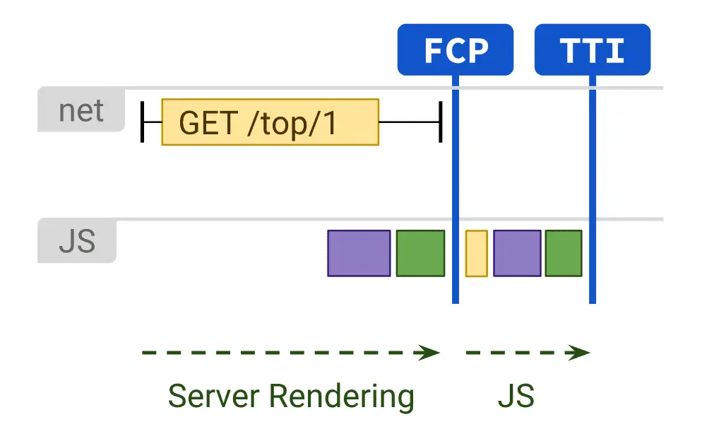

短答
渲染决定第一份 HTML 响应里是否已经包含爬虫应该读到的文字。
服务器渲染和静态 HTML 把产品名放进响应。客户端渲染发出一个壳，等脚本运行后再拼出名称。不执行脚本或稍后才执行脚本的爬虫，可能只看到壳。当模板依赖 JavaScript 时，SEO 健康会在样例 URL 上比较这两种视图。
定义
服务器渲染的图表示 HTML 在浏览器额外的脚本工作之前就已经存在。主要内容值得追求的就是这种情况。静态文件是同一想法，只是没有每次请求都重新构建。客户端渲染对应用是可行的，但可索引的文字仍然需要一条进入 HTML 的路径。这是技术就绪问题，不是任何渲染方式都会有排名的承诺。
渲染对爬虫意味着什么变化
在改文案之前，先在一条商业 URL 上比较原始 HTML 和渲染结果。
如果原始 HTML 含有产品名、规格和相关零件的链接，爬虫就有一份文档。如果只有一个根元素，健康发现是这个壳，不是主视觉里的形容词。模板重新输出 HTML 之后的再审计，应重复同一次比较。GEO 仍然需要句子可被回答，但只存在于脚本之后的可回答句子，还不是一份可获取的文档。

要检查什么
- 查看源代码是否包含产品名
- 主要链接是否作为锚点元素存在于那份 HTML 中
- 同一 URL 的有 JavaScript 和无 JavaScript 抽样
- 发现被归为模板 HTML，而不是文案语气
- 改完之后的再审计比较
一个结构示例
备件应用要等客户端路由跑完才渲染适配表。查看源代码只看到一个转圈。健康蓝图写的是：对应该被索引的 URL，把表格或表格的真实服务器响应放进 HTML。增加品牌博客并不会填上这个壳。
它不声称什么
选择渲染方式不保证排名或引用。
Mika Visibility 把它归到哪里
Mika Visibility 把渲染当作 SEO 健康问题：当模板依赖 JavaScript 时，重要 HTML 能否在有脚本和无脚本两种情况下被获取并比较。这种比较不是 GEO 审计，也不是市场覆盖计划。发现要附在样例 URL 上。模板改完之后的再审计，用来确认修复。
图中显示 HTML 从服务器到达，因此文章可以把这和空壳对照起来。
常见问题
渲染为爬虫决定了什么？
渲染决定第一份 HTML 响应里是否已经包含爬虫应该读到的文字。
首先应该做哪一种比较？
在改文案之前，先在一条商业 URL 上比较原始 HTML 和渲染结果。
渲染方式能保证排名吗？
选择渲染方式不保证排名或引用。
下一步
做一次结构化的 SEO + GEO 审计，查看健康发现、增长缺口和可以执行的蓝图。
更清晰的实体、答案、证据和上下文，会让页面更容易被理解与引用。任何回答产品中的结果都不作保证。